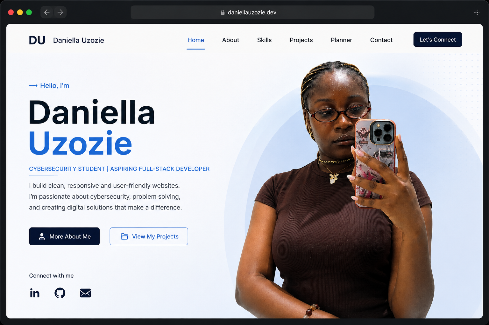
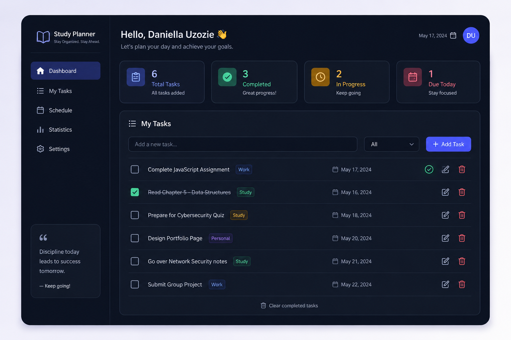
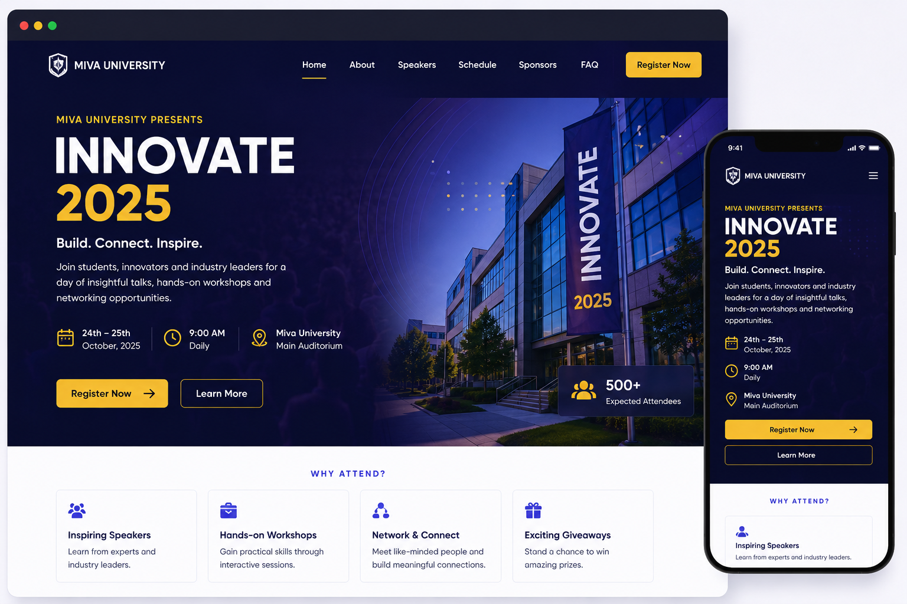

My Projects
Welcome to my project portfolio. Below are some of the web development projects I have created to demonstrate my skills in HTML, CSS, JavaScript, and responsive web design. Each project reflects my commitment to continuous learning and my growing interest in building practical digital solutions.

Academic Task Planner
An interactive web-based planner that enables users to add, mark as completed, and delete academic tasks. The project demonstrates JavaScript event handling, DOM manipulation, arrays, and dynamic content updates to enhance task management.
View Project
Event Landing Page
A modern and responsive landing page designed to promote a university event. The page includes engaging visuals, event details, clear call-to-action buttons, and a mobile-friendly layout built with HTML and CSS.> View Project